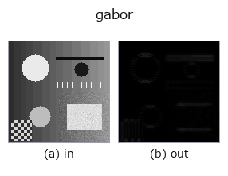

texture op• 데이터 종류: image → image
• 호출: fullseye.apply(img, "gabor", a=0.5, b=0.5)(2-D 는 이미지 1 장 + 스칼라 노브 2 개 a,b∈[0,1] 모델)
• HALCON 대응: gen_gabor(의미·매개변수는 HALCON 레퍼런스가 참고가 됩니다)

*그림은 128×128 합성 입력에서 실제로 실행한 출력. 왼쪽이 입력, 오른쪽이 출력. 점군은 위에서 본 산점도(밝기 = z), 1-D 열은 꺾은선, 볼륨은 z 방향 최대값 투영, 동영상은 가운데 프레임, 복소 영상은 진폭이며, 그림이 되지 않는 반환값은 값 자체를 표시한다.*
*출력은 viridis 풍의 의사 컬러(짙은 보라 = 작음, 노랑 = 큼)로 표시한다. 거리·위상·방향·깊이 같은 「양의 장」을 읽기 위해.*
노브 a 를 훑기(0.1 / 0.5 / 0.9, 다른 노브는 기본값):
▸ gabor: 노브 a 스윕 (문서 사이트)
노브 b 를 훑기(0.1 / 0.5 / 0.9, 다른 노브는 기본값):
▸ gabor: 노브 b 스윕 (문서 사이트)
다른 영상에서도(합성 장면 / 사진 / 동전. 윗줄이 입력, 아랫줄이 그 출력. 노브는 기본값):
▸ gabor: 다른 입력 이미지 (문서 사이트)
*4열은 컬러 (H,W,3) 입력. 이 op는 채널을 넘나들지 않고 컬러를 다룰 수 있다(색 채널을 세 번째 공간축으로 컨볼루션하지 않음).*
Gabor 에너지 |v * g| —— 방위를 가진 대역통과 텍스처 응답.
• a — 방향 θ = π·a [rad]. 커널의 코사인은 회전 후의 x 방향으로 달리므로, a=0 (θ=0)은 세로 줄무늬(열 방향으로 명암이 바뀌는 무늬)에 가장 강하게 응답하고, a=0.5 (θ=90°)는 가로 줄무늬에 응답한다. a=1은 θ=180°로 a=0과 같은 방향.
• b — 공간 주파수 0.1 + 0.3·b [cycles/px].
★정규화(2026-09-02의 수정): 커널의 L1 노름으로 나누는 고정 스케일. 이전에는 _norm = 그 영상에서의 최대 절댓값으로 나누었기 때문에 응답의 크기 그 자체가 사라져 있었다. 실측(96×96의 가로 줄무늬, 주파수 0.25): 날것의 합성곱의 평균 진폭은 θ=0°가 0.0165, θ=90°가 0.9077로 54.9배의 차가 있는데도, _norm을 거치면평균은 0.3554 대 0.4790 = 1.35배까지 찌그러져 있었다 —— 방향을 구별하기 위한특징량인데 식별력이 사라져 있었다(방향마다 다른 제수로 나누고 있었으니 당연하다). |v| <= 1이면 |v * g| <= sum|g|이므로 L1으로 나누면 값 범위 [0,1]을 유지한 채 op를 넘나들며 비교할 수 있는 절대 스케일이 된다.
가장자리 처리: 가장자리 화소를 중복해 접는다 (d c b a | a b c d, scipy 기본값 reflect)(실측. tools/impl2/border_probe.py).
아무것도 찍히지 않은 프레임(실측): 밝기가 균일한 이미지를 넣으면 밝기와 무관하게 결과가 비어 있다(모든 화소가 배경 0). 순백이든 순흑이든 같으며, 밝기 자체로는 아무것도 검출하지 않는다.
• gallery2d_texture_freq 패밀리 가이드
• 샘플 데이터 카탈로그(DL URL / 라이선스) —— 2-D 는 skimage.data(BSD/public)+ 합성, 3-D 는 실데이터 소스(Stanford/PDS 등)의 DL URL.
• 연산자의 내력·참고문헌 —— 이 연산자 족의 바탕이 된 연구/기법의 출처.
• 알고리즘의 정전(저자·연도)과 용도는 위의 패밀리 사용 가이드에 적혀 있습니다.
아래 프로그램은 실제로 실행됨을 확인했습니다(그림과 같은 입력). Studio 도움말에서는 이 블록이 버튼이 되어 즉시 불러와 실행할 수 있습니다.
gabor 0.50 0.50
• gallery2d_texture_freq — py -3.11 examples/gallery2d_texture_freq.py
image 를 입력으로 받는 것)identity · gaussian · mean_box · bilateral · unsharp · median · min_filter · max_filter
texture)std_filter · local_bimodality · local_std · scale_select_std · bootstrap_std_error · structure_tensor_orientation · structure_tensor_coherence · sk_frangi
*Provenance: ops.py — 2D 연산자 레지스트리. 이 op 노트는 tools/opdocs.py md 가 자동 생성합니다(직접 편집하지 마세요).*
© 2026 Kazufumi Furuse — Fullseye operator documentation. Licensed under Apache-2.0.